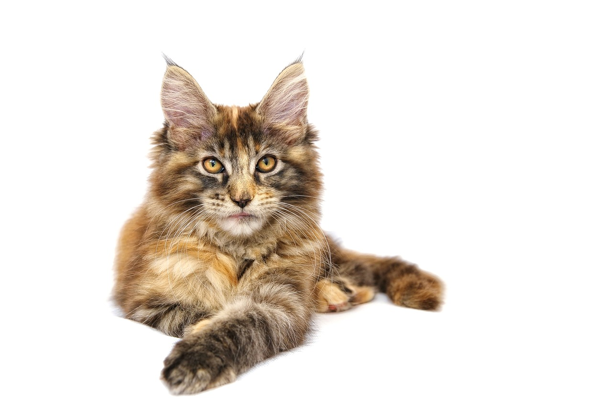
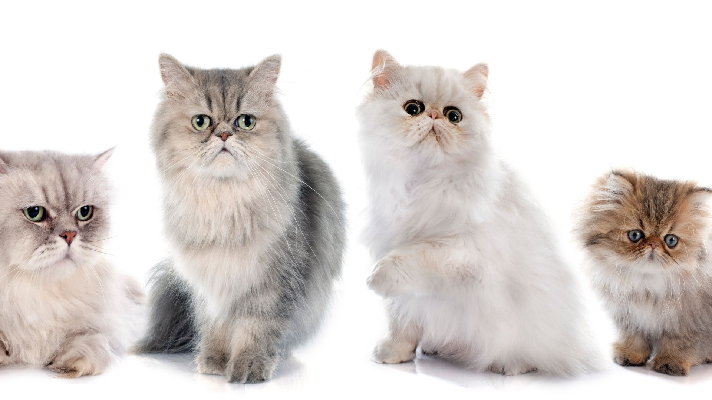

Nie tylko w Polsce, lecz także na całym świecie najczęściej możemy spotkać koty nierasowe, czyli tzw. dachowce, a także mruczki należące do rasy kot europejski. Najpopularniejsze rasy kotów:
- Europejski
- Kot perski
- Maine Coon
- Brytyjski
- Sfinks
- Norewski leśny
- Syberyjski
- Rosyjski niebieski